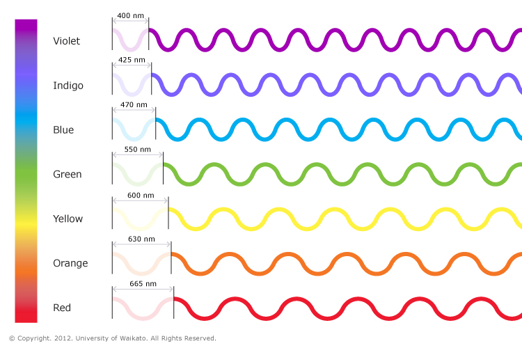
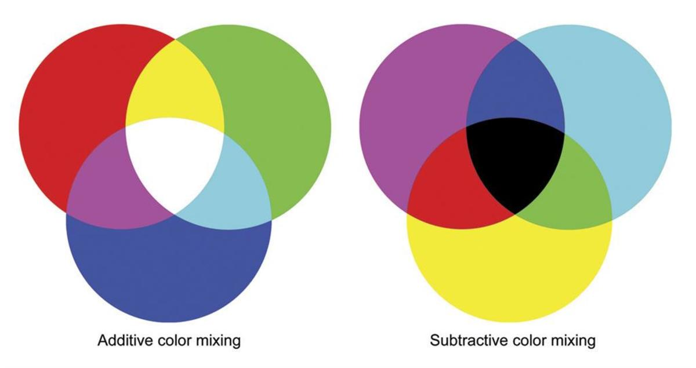
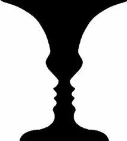
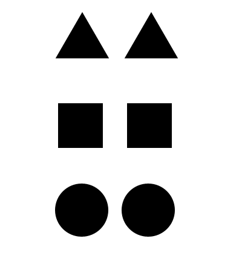
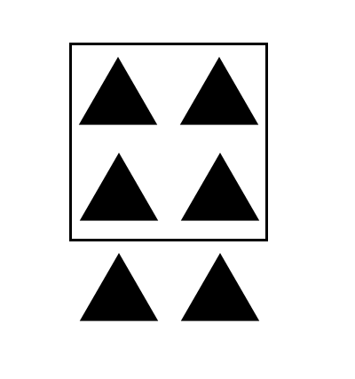
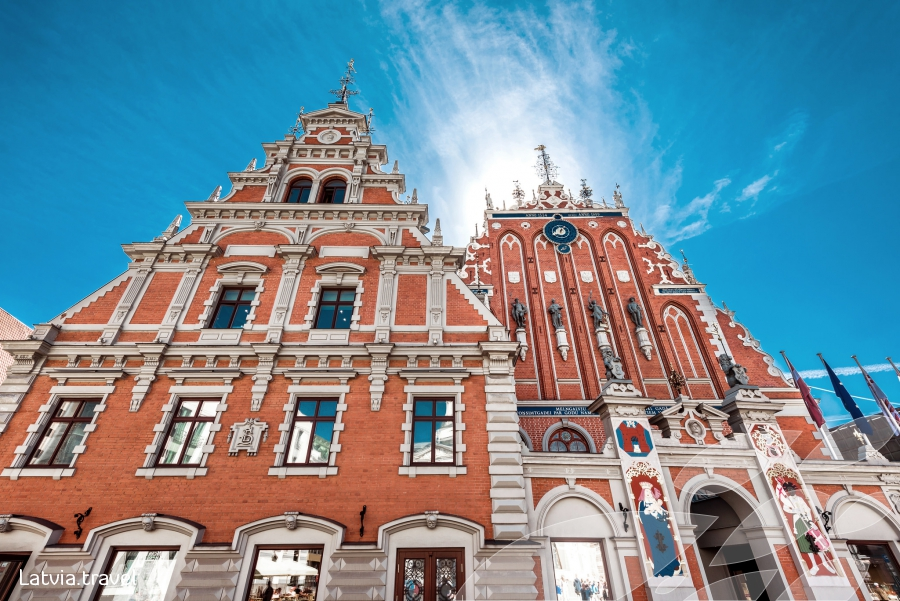
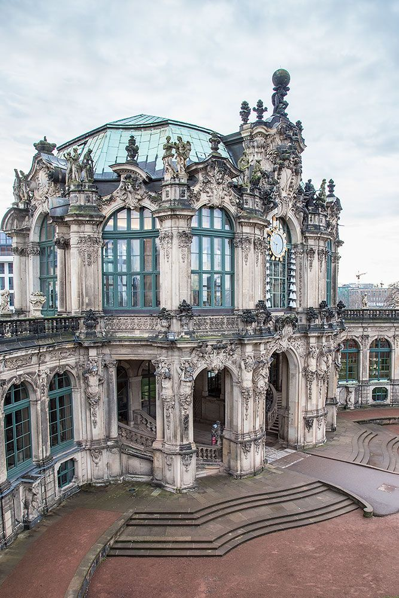
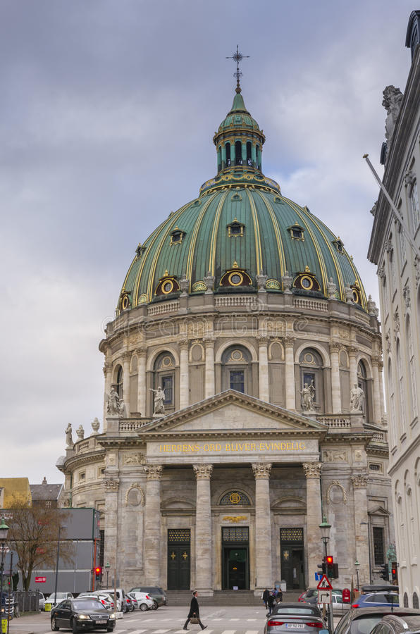
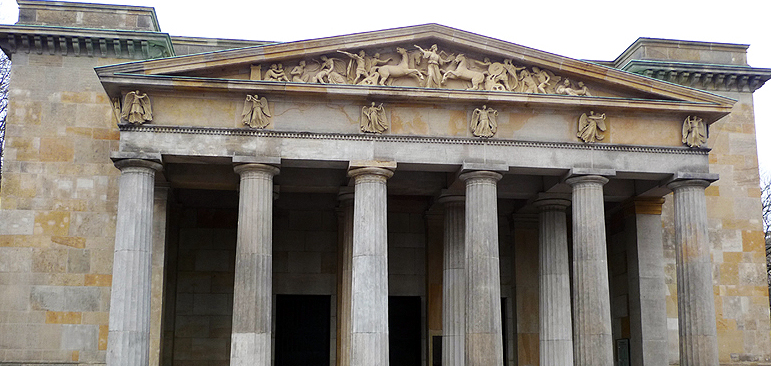
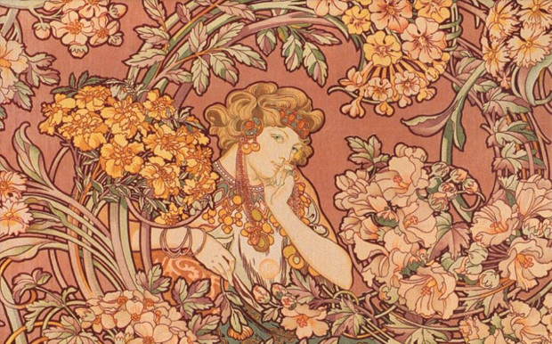

Traditionelt anskues design som en formgivning, f.eks. udformning af et produkt som tøj, en illustration eller en plan[1]. En designer (tidligere kaldet en dessinatør) er et bredt udtryk for personen, som står for denne udformning. Resultatet kan man kalde et design.
At designe er et udtryk for den proces, hvorved man formgiver noget. I denne proces overvejer man ofte resultatets æstetiske og funktionelle egenskaber. Design kan også være at give en ting en lyd, f.eks. en el-bil således den ikke er lydløs, dette kaldes skeuomorfisme.
Der findes mange forskellige fag og professioner, der handler om design i sin klassiske opfattelse:
Filtning
Industrielt design
Multimediedesign
Møbeldesign
Programdesign
Mode
Vævning
Webdesign
Planlægning, Skitsering
The Fuzzy Frontend?
De første faser i processen er ekstremt vigtigt.
Start med at danne dig et overblik over hvad du gerne vil frem med. Tegn flere skitser eller "Roughs", meget gerne med forslag
der viser 3 eller flere udkast i forskellige skærmtilstande. Evt.:
Desktop (Omkring 1366px?)
Tablet (Omkring 768 - 1024px?)
Mobile (Under 768px?)
At tegne skitser er ikke spild af tid!
Inden du starter et nyt projekt op, er det en rigtig god ide altid at skitsere dine udkast, ikke kun for at skabe overblik, få bekræftet ideer overfor kunder, kolleger eller dig selv.
Der sker ting i hjernen når man tegner, med et fint ord kaldes det sansemodalitet. Vi anvender andre områder af hjernen når vi tager en blyant og et stykke papir og håndtegner en skitse.
Projektet opfattes med andre sanser, og på en anden måde, du får overblik over de udfordringer du evt., kommer til at støde ind i undervejs.
En tegning eller skitse er f.eks. en rigtig god måde at afgære hvordan og hvilke områder der som minimum skal være tilgængelige på mobile enheder, og hvilke der umiddelbart ikke er så vigtige.
Wireframes
"Skellettet" eller byggestenene.
Som med skitser er en "WireFrame" en vigtig del under opstarten af dit projekt.
WireFrames beskriver placering, størrelse og form på de områder eller "Blocks" som dit Website skal bestå af.
Du har måske allerede et overblik over opbygningen fra dine skitser?
Du skal definerer områder, størrelser og placering nærmere. Grundlaget for den grafiske, såvel som den tekniske del af dit Website placeres så de fungerer på skærme og devices.
WireFrame er den betegnelse man normalt bruger om det "Net eller Grid" bloksystem/moduler, man normalt bygger et website op over.
Farveteori
Grundlæggende består alle farver og alle nuancer du ser i dine omgivelser af bølgelængder, altså de "bølger" lysets "bulseren" får når de tilbagekastes fra en overflade og rammer dine øjne.

*De "varmeste" farver har den længste bølgelængde.
På skærme og monitorer skabes farver digitalt, ved at "skrue op eller ned" for lysets styrke i 3 "kanaler": Rød, Grøn og Blå(RGB): Addictive farver.
Farverne opnås ved at blande lysintensiteten i de 3 kanaler ved hjælp af en "Hexagonal" værdi, (Hex = 6). Dvs. du kan justere 6 værdier (2 for hver kanal). Hex-værdien defineres med #:
Værdierne starter ved 0 (Slukket) og slutter ved F (Fuld styrke):
0, 1, 2, 3, 4, 5, 6, 7, 8, 9, a, b, c, d, e, f (16 værdier) Eks.:
#FFFFFF : (Hvid) : Alle kanaler "tændt"
#000000 : (Sort) : Alle kanaler "slukket"
#00FF00 : (Grøn) : Kun grøn kanal tændt
Hvis du forhøjer de 16 værdier (0 - F) med: 6(Hex) får du tallet : 16, 777, 216(Antallet af farver du kan lave med RGB Hex: 16 x 16 x 16 osv.

Blandet gul, Magenta og Cyan fremtræder som næsten sort. (CMYK)
Substraktive farver: Print: (Refleksion af pigment).
Skrifttyper til webbrug skal være lette at læse, og så skal de være installeret på brugerens computer.
Normalt anbefaler man sans serif (groteske) skrifter til webbrug. De kendeste sans serif skrifter er Arial og Verdana. Verdana er en stor åben font specielt designet til skærmen. Generelt signalerer sans serif fonte en moderne og seriøs stil.
Men på moderne skærme kan serif (antikva) skrifter sagtens bruges. Georgia er designet til skærmbrug og meget velegnet. Times new roman ikke egnet. Den er alt for kompakt, og svær at læse. Serif fonte signalerer tradition og gamle solide værdier.
Nogle af de mest udbredte fonte på nettet er:
Verdana
Arial
Georgia
Trebuchet
Gestalt Lovene
Gestaltlovene handler om perception, eller sansning og oplevelse af forhold, sammenhæng og adskillelse mellem ting. Hvordan kontraster, forbundenhed størrelsesforhold og adskillelse f.eks. kan påvirke opfattelsen af objekter og sammenhæng mellem disse.

Rubins "Vase"?! Eller måske to ansigter der ser på hinanden? Opfattelsen af motivet afhænger af kontrasten og baggrunden.
De mørke områder har i forbindelse med den hvide baggrund en tendens til at være mest fremtrædenden
Nærhed
Ting der er nære, opfattes som hørende sammen.
Forbundethed
Ting der er forbundet, opfattes som hørende sammen.
Lighed
Symboler der ligner hinanden opfattes som hørende sammen.

Symboler, der ligner hinanden, opfattes som hørende-
Lukkethed

Symboler samlet i f.eks. bokse eller rammer opfattes grupperet.
STILARTER I ARKITEKTUREN
Renæssance

Den europæiske renæssance var en periode fra omkring 1400 til 1700. Renæssance betyder genfødsel og refererer til genfødslen af de græske og romerske ideer under antikken.I løbet af perioden bliver formerne fyldigere og reliefferne højere. I den sidste del afslappes formerne
Barok

Barokken var en stilperiode fra omkring 1640 til 1730. Barokken er især kendt på sin storslåede, selvsikre, kompakte og pralende stil. Opbygningen indenfor barokken er altid strengt symmetrisk. Tilsvarende principper går igen ved møblerne, som typisk på store todørs ædeltræsfinerede skabe med stærkt fremspringende og rigt profilerede lister. De rigt profilerede lister giver et levende spil mellem lys og skygge. Under dørene er der gerne 2 skuffer og skabet hviler på kraftige kugleben.
Rokoko

Rokoko var en stilperiode fra omkring 1725 til 1760. Rokokoen er orientalsk influeret og kendetegnet ved at være elegant og graciøs og med snirklede og asymmetriske ornamenter.Det var mest af alt møbler, der blev præget af rokokostilen. Det gælder f.eks. kommoder, stole og borde som under rokokoen blev udstyret med flotte svungne ben. Fronten er også tit svungen og især rokokokommoderne er meget flotte. Rokokomøblerne blev desuden udsmykket med marketteri og støbte bronzeslag, som oftest er ciselerede og forgyldte.
Nyklassicisme (Romantik)

Nyklassicismen var en stilperiode fra omkring 1750 til 1850. Nyklassicismen er kendetegnet ved enkelhed og storhed. Hovedbudskabet er "ædel enfold og stille storhed", hvilket betyder en entydig, ideal og enkel fremstilling og med de klassiske motivers afdæmpede og storladne former.
Den danske billedhugger Bertel Thorvaldsen var én af nyklassicismens førende kunstnere.
Art Nouveau

En dekorativ stilart fra omkring 1900 tallet. Art Nouveau er kendetegnet ved store knudrede ornamenter. Planteornamenter brugtes overalt på glas, metal, møbler osv. Tulipanen og vedbendbladet var blandt stilartens ynglingsornamenter.
Framework?
Fordele
De er gode til prototyper
Du kan få fart ved at "få noget på siden"
De er praktiske, når du er i stramme frister
De giver et solidt fundament for lydhør design
Komponenter i brugergrænsefladen har en basestil, der skal udvides (formularer, knapper, menuer osv.)
Basestilstanderne fortsætter hele tiden
De giver et konsekvent brugerdefineret design til udviklere, der mangler designkundskaber, hvilket er fantastisk til ting som intranetsider eller dokumentation
De giver en basisudvikling for ikke-udviklere at få noget hurtigt op til prototyping eller mockups
Ulemper
De kan være for opfattede
Selvom de er nemme at komme i gang, kan de kræve mere tid på vejen for at tilføje funktioner og tilpasninger. Du kan finde dig selv at bekæmpe basestilene med overstyringer (spild af al den dyrebare tid, du sparer) for at få de ønskede resultater.
Du lærer ikke at kode
Det er let at falde i fælden ved kun at lære rammen og ikke lære at udvikle sig.
Tendenser
Internettet har i højere grad end noget andet udviklet sig med ekstrem fart i de relativt få år det har eksisteret.
Teknologi, skiftende behov, muligheder og nye standarder som HTML5 har gjort at den måde vi producerer sider på internettet har ændret sig flere gange på ganske kort tid.
Største indflydelse på webdesign de seneste år:
Håndholdte enheder: Mobiltelefoner og tablets har efterhånden overhalet computeren/desktoppen(Cross Platform).
HTML5 og CSS3 gør at mange animationer/effekter laves i Markup og CSS alene.
Semantikken og strukturen i koden er vigtigere nu end nogensinde (Kompatibilitet/"Crossplatform" samt SEO).